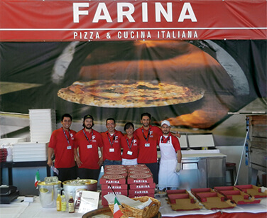
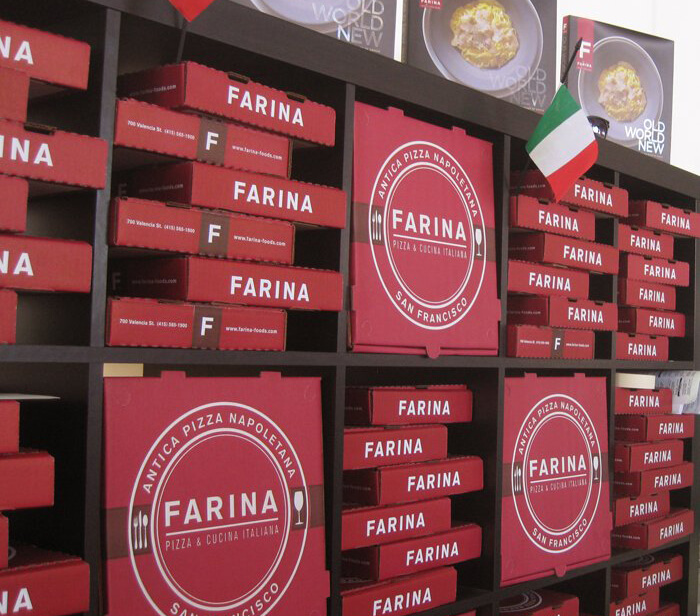
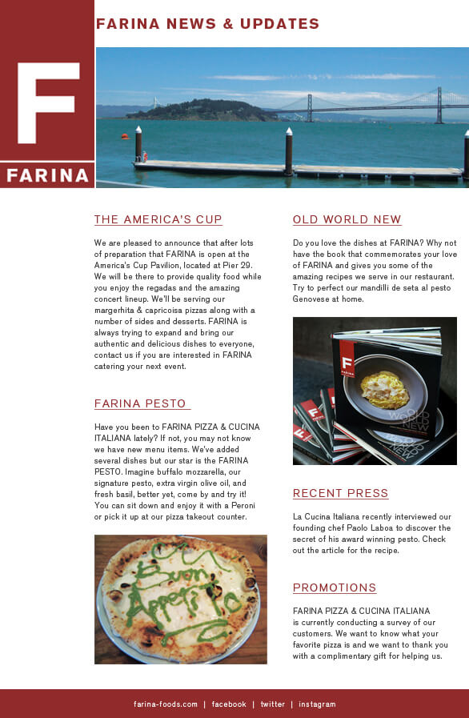

Farina opened a stand at the America's Cup and needed to convey the personality of the restaurant in their area.
With the majority of the budget going to the equpiment, we needed to create a welcoming store front with limited funds. The biggest thing that needed to addressed was how bare the area was. We created a large banner prominently displaying the name & product. The oven and all prep was set up focus around the banner and create an environment.
Easy access to pizza boxes were neccessary to keep orders moving and also made an interesting environmental display.
The stand was cross promoted through the website, in emails and flyers handed out at the event and in the restaurant.